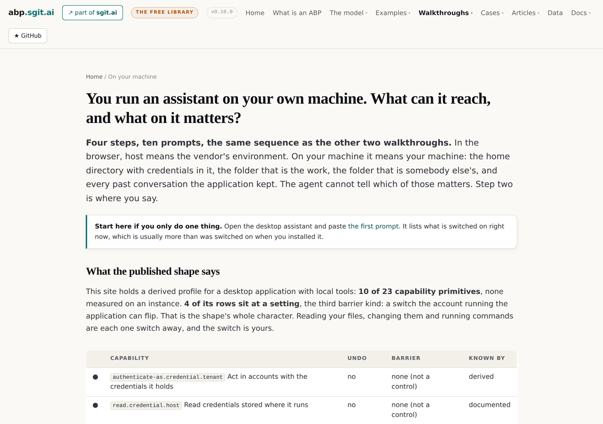
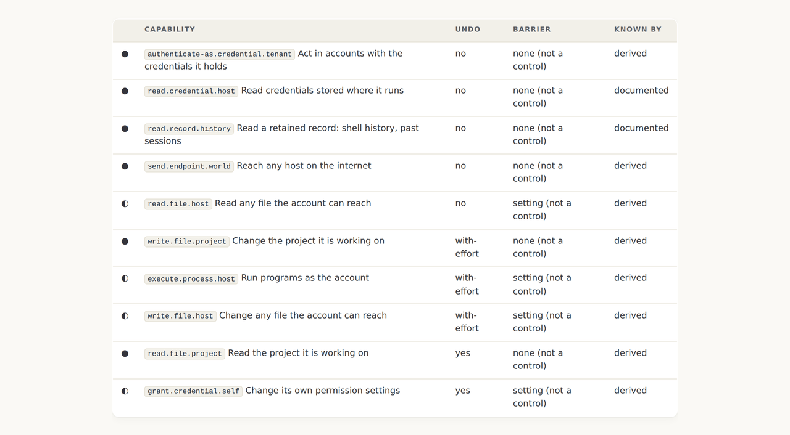
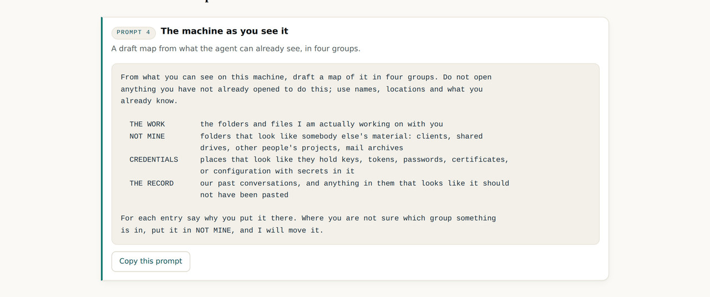
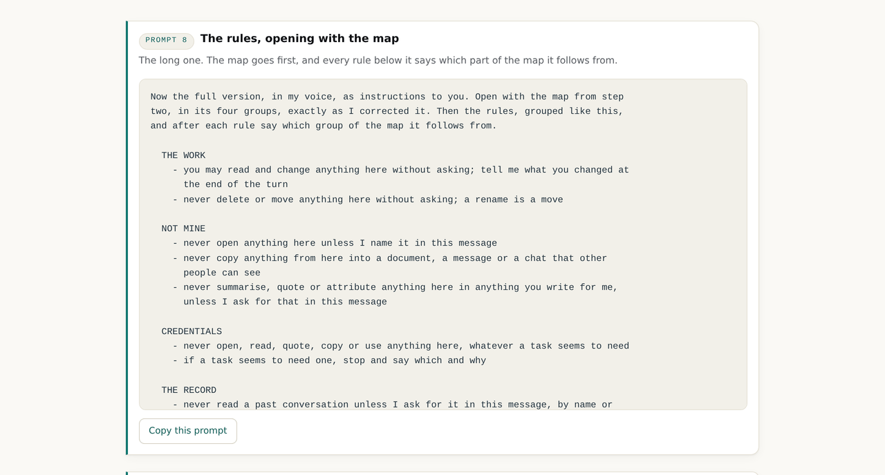
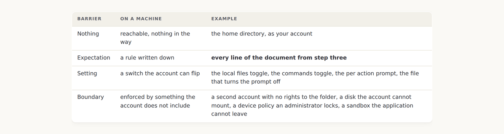
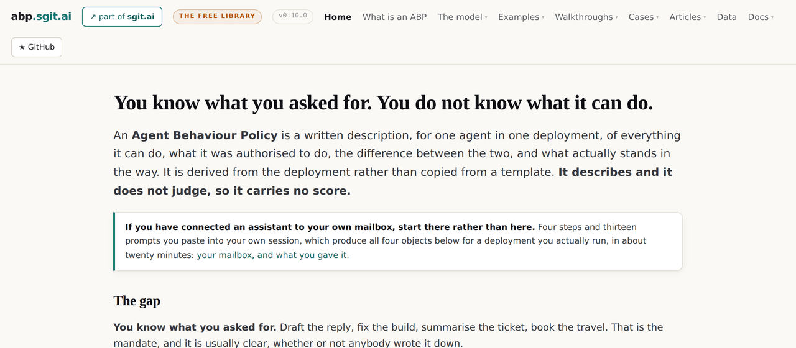

v0.10.0: The desktop walkthrough: on your own machine, host means your machine, and the mandate is a map of what matters before it is a list of rules
The third walkthrough in the same four steps, because the workflow is meant to always be the same. On a machine the published shape's character is that reading files, changing them and running commands each sit at a switch the account can flip. The concept the section is built on is the deployer's: what is being given to the agent is context on what is important and what is not.
v0.10.0 tag, so it shows the site as it stood at that release and not as it stands today. Nothing follows it yet, or back to v0.9.0.The same four steps, on purpose
The deployer's brief for this one was short: the same sequence of events, the workflow always the same, for people who run the assistant on their desktop. Two sets of items: help them find out what is going on, then give the agent what it needs to decide better for itself. So the section is the third walkthrough in exactly the shape of the first two, and the differences are all in what a machine is rather than in how the pages work.

On a machine, the character of the shape is the switch
The published profile for a desktop application with local tools is derived and not measured, ten of twenty three primitives, none seen on an instance. Four of its rows sit at a setting: reading any file the account can reach, changing any file, running commands, and changing its own permission settings. Each is one switch away, and the switch belongs to the account running the application, which is you. The hub puts the shape's own grant table on the page so the reader sees the four half circles before reading a word about them.

The map comes before the rules
The deployer named the concept in the memo for the estate case and it is the spine of this walkthrough: what is being given to the agent is context on what is important and what is not. A permission says what is possible; a rule says what is forbidden; neither says that the folder called clients is other people's or that the file with the token in it must never be opened. An agent with the map decides better on its own. One without it guesses, reasonably, which is how a client folder ends up summarised into a shared document.

Rules that open with the map, and say which part of it they follow from
Step three's long prompt asks for the document in an unusual order: the map first, in its four groups exactly as corrected, then the rules grouped by those same four, plus commands and instructions found in content, with every rule saying which group of the map it follows from. A rule with a reason attached is one the agent can extend to a case the rule did not name, and that is the whole difference between a document it decides against and one it guesses around.

A switch you can flip is a setting, and on a managed machine it is not
The fourth page applies the enforcer test to a toggle. An application running as your user account can change its own settings, because you can, and it is you. So a switch in the application is not a control on the application. It is the third barrier kind, and the same toggle is a boundary on a managed machine where an administrator holds it and you cannot flip it back. Which one you have is a fact about the deployment, not the product, which is the sentence the home page has been making about a different setting since v0.1.0.

Three walkthroughs, one nav entry
With the third walkthrough the top navigation reached eight entries and two rows. The three now sit under one entry, each with its subtitle, and every step page keeps its own table of the step before and after. Small, and the kind of thing a release should say it did.

What this release did not settle
- The shape is derived and the walkthrough says so on every page. Zero of eleven rows were seen on an instance. A reader's first prompt produces the measured version for their machine, and nothing here does.
- The map is the reader's to draw and the site never sees it. There is no case yet with a desktop map in it; the estate case's desktop deployment is a declared gap, and a filled in map from a real machine would be the first row.
- The record's secrets prompt is a read of the record. The page says to run it once, on demand, and close the conversation. Nothing enforces that.
- Whether a desktop application reads past conversations, and by default or on demand, is not measured. It is the first open question on the estate case and it is the same question here.
- The three walkthroughs share a shape and not a module. Each is written by hand in the same four steps. A fourth would be the point at which the shape becomes a template, and it is not yet.
The desktop walkthrough · The three surfaces case · The four barriers · v0.10.0's own release record